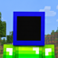
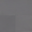

DeathCraft
بهترین تجربهی SkyMine و Arcade روی سرور ماینکرفت ایرانی؛ بیا بساز، بجنگ و بدرخش.
Play.DeathCraft.IRکپیدو دنیا، بینهایت سرگرمی
هر کدوم از مودهای DeathCraft یه تجربهی کاملاً متفاوته؛ هر طور دوست داری بازی کن.
SkyMine
روی جزیرهی آسمونیات شروع کن، منابع جمع کن، جزیرهات رو بزرگ کن و با بقیه رقابت کن.
اسکایبلاکاقتصادرتبهبندیArcade
مینیگیمهای سریع و هیجانی برای وقتی که میخوای با دوستات یه رقابت حسابی داشته باشی.
مینیگیمدستهجمعیسریعچرا DeathCraft؟
یه محیط حرفهای، سرگرمکننده و امن برای بازیکنهای ایرانی.
امنیت بالا
محافظت در برابر هک، کلاینتهای تقلبی و رفتارهای مخرب.
اقتصاد فعال
سیستم اقتصادی پویا با خرید و فروش بین بازیکنها.
پشتیبانی ۲۴ ساعته
تیم ما همیشه آنلاین است؛ سؤال و مشکلت رو بگو.
نسخههای ۱.۸ تا ۲۶
با تقریباً هر نسخهای از ماینکرفت جاوا وارد شو.
امکانات اختصاصی
پلاگینها و قابلیتهای ساختهشده مخصوص DeathCraft.
گیممودهای متنوع
هر روز یک تجربهی جدید؛ از SkyMine تا Arcade.
در ۳ مرحله وارد شو
بدون ثبتنام پیچیده؛ فقط آیپی رو بزن و بپر تو بازی.
ماینکرفت رو باز کن
ماینکرفت جاوا (نسخه 1.8 تا 26) رو اجرا کن.
Add Server بزن
وارد Multiplayer شو و روی Add Server کلیک کن.
آیپی رو وارد کن
Play.DeathCraft.IR رو بزن، Join کن و بازی رو شروع کن!
تیم مدیریت DeathCraft
کسایی که پشت صحنه سرور رو زنده نگه میدارن.

hesigame
FounderNZGame_110
Owner
AMIRALI8080
Developerدربارهی DeathCraft
DeathCraft یک سرور ماینکرفتی ایرانی با هدف ایجاد یک محیط حرفهای، سرگرمکننده و جذاب برای بازیکنان است. با گیممودهای متنوع، سیستم اقتصادی مناسب، امنیت بالا و امکانات اختصاصی، تجربهای متفاوت برای بازیکنان Minecraft میسازیم.
قوانین سرور اطلاعات بیشترآمادهای که بدرخشی؟
آیپی رو کپی کن و همین الان بیا تو بازی.